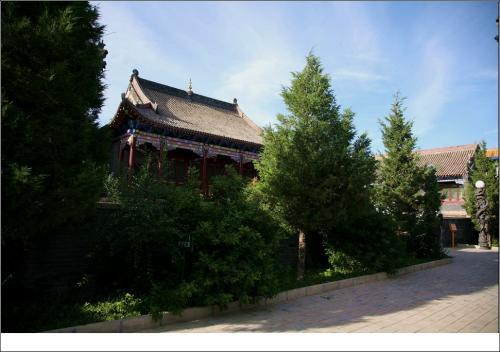
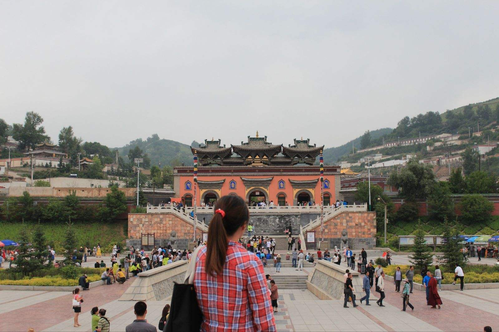

梵宗寺位于赤峰市翁牛特旗乌丹镇西北4公里处，是该旗目前仅存的一座较完整的古建筑群。整个建筑群由山门（天王殿）、正殿、东西配殿、后殿(丈八佛殿)、关帝殿、经卷殿等组成，现存115间，总建筑面积5000平方米。1985年，此寺列为内蒙古自治区重点文物保护单位 每座殿宇都建筑在石台基之上，都为青砖灰瓦木架结构，梁枋上绘有多彩的游龙和花卉，墙上还保存有一批壁画，以及精美的雕刻等。这是赤峰地区现存规模较大、保存较完整的古建筑群。寺院周围树木茂密，环境优美。 建筑特点 梵宗寺座落在内蒙古赤峰市翁牛特旗人民政府所在地乌丹镇四公里外，由乾隆帝赐名，建成于清代乾隆八年（1743年），原占地面积一公顷，有佛殿十多座，曾被旗扎萨克定位总揽全旗喇嘛庙务的旗庙。
梵宗寺 景色绮丽、环境清幽的梵宗寺，坐北朝南，依山而建， 随地势高低而形成阶梯式院落。整体布局庄严肃穆，气势超俗，南半部明朗开阔，北半部严整紧凑。 寺院以正殿和配殿作为称式，即以山门（天王殿）、正殿（大雄宝殿）、后殿（弥勒殿）为纵轴线，两侧有配殿陪衬，组合成几个封闭式的四合院。殿宇皆为青砖瓦木架结构，殿宇与殿宇间各具特色，屋脊形式各异，崇宏雄伟，匠心独具，相设奇丽，额枋与梁枋上下的彩绘栩栩如生。人物、游龙、飞凤、禽鸟、花卉等，形态逼真，活灵活现。殿顶为布筒瓦顶，均有莲花或兽面三角形式滴水和圆勾头，正脊多为清水脊，两端设有龙吻。垂脊和戗脊的垂兽、戗兽和狮、马、形神兼备，充满了灵性。建筑物上的各式浮雕，技艺精湛，巧夺天工。 历史 这座堪称塞外名刹的梵宗寺，也没能幸免"文革"期间的厄运，被破坏的面目皆非。为了恢复寺院的原貌，1987年以来，旗人民政府多方筹措资金进行了修复。中国藏语系高级佛学院教务长、研究员、第五世活佛、梵宗寺主系活佛丹迥·冉纳班杂（汉名吴占有），为使寺院重放异彩，殚精竭虑，从国内外繁忙的佛事活动和讲学中抽暇前来，从1998年开始，已先后投资千万元，对寺院进行了修复。新修复的梵宗寺占地四公顷，有寺前广场、天王殿、鼓楼、钟楼、客堂、僧房、转经殿、关帝殿、二十一度母殿等组成，形成了赤峰地区规模较大、风格独特的古建筑群。梵宗寺将在2004年农历六月初四、初五、初六，举行全寺开光盛典。 梵宗寺 在丹迥·冉纳班杂活佛的倡导主持下，本着契理契机，庄严国土，利乐友情的目的，为"培养爱国守法，爱教清静， 有知识，有能力，能持理，弘扬佛法"的新僧人，以迎接新世纪现代科学文化的挑战，梵宗寺从提高僧人的思想文化素质，树立良好的道风、学风，建立健全管理组织和规章制度入手，在新建的1700平方米的二层楼天井，开辟教室三间，增设了投影机和微机等先进的教学设备，聘请国内有关大学的资深教授，专事系统的佛学、古代汉语、现代汉语、蒙古语、英语等科目的授课。 按活佛丹迥·冉纳班杂的设想，通过锲而不舍得努力，最终将梵宗寺办成学院式寺院。为此，寺院设立了图书馆、资料室、档案室和电脑室，建起了"蒙藏诊所"。为中国国内佛教大德善知识以及佛学专家学者进行学术研究和交流提供方便的"活佛府邸"和"居士楼"，也已列入建设规划中。尚处在草创阶段的寺院办学形式，在国内首屈一指，内蒙独一无二。 梵宗寺主管日常工作的大喇嘛佐巴尖措，1980年10月出家受戒，1997年在喀喇沁旗龙泉寺任住持期间，主持了龙泉寺的修复工作，他还参与了其他三座寺院的修复，成绩卓然。他还被内蒙古自治区和赤峰市评为“先进僧人”、“模范住持”，所主持的寺院，获得了"先进寺院"的称号。梵宗寺也于2004年4月获得了赤峰模范寺院"的殊荣。 1985年，梵宗寺被列为内蒙古自治区重点文物保护单位，1995年被批准为宗教活动场所。
交通提示 航空：赤峰机场每天有到北京、呼和浩特等地的航班往返。 铁路：赤峰站位于市区南部、昭乌达路的最南端，从赤峰至北京、呼和浩特、沈阳、大连、锦州、承德都有列车直达。 公路：赤峰长途汽车站就位于火车站前的广场上，111国道穿境而过。赤峰至北京、天津、秦皇岛、石家庄、沈阳、唐山、锦州、朝阳均有车直达。 北京北站 2559次列车 晚上 21.33发车 早上7.15到达赤峰 票价 ：123卧铺（7.1调价后价格 ） 赤峰到北京 ：2560次列车 赤峰站始发 20.20 早上 6.15到北京 总的来说还是很方便的 ！ 到了赤峰，乘坐前往赤峰翁牛特旗的公交车即可到达